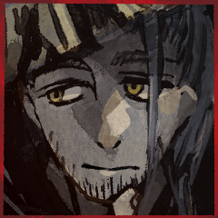

GM
シノビガミセッション『神楽八十神追』第八回！
GM
◆メインフェイズ第三サイクル第四シーン
シーンプレイヤー：葦原 名張 再開
三榊 琴梨
「ふらぺちいの以外もおいしいですよね」
これは……スタバのメニューの大半を飲んだことがある言い振り！
三榊 琴梨
「でも、せっかくのすたば、ですから。琴梨はつい、そちらを頼んでしまいます」
照れ臭そうに笑う。
三榊 琴梨
「……儀式が終われば、実際に行ってみたいものです」
葦原 名張
「スターバックス以外にも行こう。俺だって行ったことがないところばっかりだからな。儀式の後ならあれもこれも自由だ」
葦原 名張
「映画だって服屋だって、夏の海にも、冬の山にもいける」

葦原 名張
「………」
何かを思案するような間。
葦原 名張
「……儀式をやりとげたからって、いちから……あー……デートから始めたってかまわないだろ？」
三榊 琴梨
「……すたあばっくすに……
いいえ、それ以外の場所にも」
三榊 琴梨
「一緒に行ってくださるような方は、お姉さまだけだと思っていました」
三榊 琴梨
もちろん、彼女だけに頼りすぎるのは良くないと思っていたけれど――琴梨の世界は、あまりに狭かった。
他の誰かと一緒に、というのを、考えられないくらいには。
葦原 名張
がりがりと頭を支えていた方の手で頭をかく。
葦原 名張
「親父に言われた言いつけを、まじめ～～に律儀ぃ～～に守ってきたからなぁ」
葦原 名張
「だから、順番があべこべになってもそういうことからやっていきてぇんだ」
三榊 琴梨
いつもの、打てば響くような溌溂さはすっかり鳴りを潜めてしまっている。
今目の前に居るのは、ただの世間知らずの少女だ。
三榊 琴梨
伏し目がちにしていたが、笑い声に顔を上げる。
今目の前に居るのは、ただの真面目で律儀な男だった。
三榊 琴梨
「……琴梨も、やってみたいです。
でーとも、他のことも」
葦原 名張
琴梨に向く瞳が時折ゆらゆらと。
しかしながら、その両目はなんとかして目の前の姫君を見つめている。
葦原 名張
ふぅ、と満足したような安心したような声が漏れる。
葦原 名張
頭上高くに輝いていた月は傾き、やがて夜が明けるだろう。
儀式の刻限は迫っていて、そして成すべきことは決まっている。
葦原 名張
「俺はこれから琴梨の神器の封印を解く」
葦原 名張
それはほぐれていた空気を再び張りなおす言葉。
三榊 琴梨
目を閉じ、次に開いた時には、きりりとした『姫君』の面持ち。
三榊 琴梨
「言うことは、何も。
……でも、一つだけ」
三榊 琴梨
おもむろに両手を伸ばす。
名張の手を取るように。
三榊 琴梨
その先は、顔を覆うベール。
両側でそれを留めている、花飾り。
葦原 名張
子供のように小さく感じる手に導かれるまま。
三榊 琴梨
醜女衆の矜持であり、
冥府の『姫君』を外界から隔てるものであり、
『花嫁』の証を。
葦原 名張
その意図を察しわずかに体が強張る。
醜女衆にとって重要な意味を持つ”それ”を。
葦原 名張
そしてそのわずかな強張りをもってして気持ちを張りなおすと、導かれた手は迷うことなく留めている花飾りを外す。
葦原 名張
『八千矛』としてだけでなく、これから三榊 琴梨を娶る葦原 名張としても。
その覚悟を示す。
三榊 琴梨
開かれたのは花の貌。
月色に照らされたその玉肌は、輝くように、いっとう美しく咲いている。
三榊 琴梨
「不束者ですが、末永く、お傍に置いてくださいませ」
葦原 名張
「こちらこそ。これからも、よろしく頼む」
葦原 名張
＊プライズ『羽喫鳴鏑』を使用して三榊 琴梨に感情判定を行います。
GM
祭具『羽喫鳴鏑』の効果により、感情判定を省略し、成功とします。
葦原 名張
ET 感情表(5) ＞ 憧憬（プラス）／劣等感（マイナス）
三榊 琴梨
ET 感情表(2) ＞ 友情（プラス）／怒り（マイナス）
GM
『神器』の封印が解かれ、葦原 名張はこれを獲得。
GM
封印が解かれたため、三榊 琴梨の使命を葦原 名張の使命に変更します。
GM
封印が解かれたため、三榊 琴梨はすべての感情属性を取り直します。
葦原 名張、爾甁粢 野葛へのETをひとつずつ、改めてどうぞ。これは変更せずとも構いません。
三榊 琴梨
名張さん→野葛さんの順で、ET2回振ります。
三榊 琴梨
ET 感情表(4) ＞ 忠誠（プラス）／侮蔑（マイナス）
三榊 琴梨
ET 感情表(1) ＞ 共感（プラス）／不信（マイナス）
三榊 琴梨
名張さんに友情、野葛さんに怒り、どちらも変更なしで。
GM
三榊 琴梨に手渡された祭具『羽喫鳴鏑』は消滅します。
これは野葛→瞠への際も同様に起こった現象です。
三榊 琴梨
祭具『羽喫鳴鏑』に、神器が呼応する。
月明かりではない、温かな光が零れて溢れる。
二人を言祝ぐように。
三榊 琴梨
目の前の彼は。
時に友のように、時に情愛を持って、きっと良い関係を築けるのだろう。
でも、今は。
三榊 琴梨
跪く。
神に供物を捧げるよう、差し出されたその手には、
三榊 琴梨
琴梨の中に、ずっとずっと在った物。
『八十神』を討つべく生まれた大刀が、今、その手に在る。
葦原 名張
「『八千矛』葦原 名張、神器『生太刀』を拝領いたす」
葦原 名張
「この神器をもって『八十神』を討ち果たし、日の本に泰平をもたらさん」
GM
差し出された太刀は、人の身に収まるにはあまりある大きさ。
GM
神器という名にふさわしく、ただならぬ活力に満ち満ちている。
GM
受け渡された祭具はその役目を果たし、かき消え、
葦原 名張
神器『生太刀』。手の中にある直刀は、大きさなら背負う大太刀とそう変わらない。
それでいて何も持っていないかのように軽く、しかしここに確かに存在していると感じさせる力を放っている。
葦原 名張
そして瞬きのうちにその手からは消え失せる。
霧散したわけではなくその力は自分が背負う得物へ宿っている。
葦原 名張
じ、と琴梨の様子を窺うように見つめる。
三榊 琴梨
薄布がたった一枚、なくなっただけ。
視界に然程変わりはないのに。
なんとはなしに目を逸らす。
葦原 名張
そもそも顔を覗き込むようなことも、不用意に距離を詰めるようなこともしてこなかった。
葦原 名張
神器の拝領のために膝をつきわずかに見上げるような形。
しばし見つめた後に体を起こす。
三榊 琴梨
ずっと身に在った神器の解放。
確かに、身体に何かないか考えるのは当然だ。
照れた自分が恥ずかしい。
それを誤魔化すように、拳をぐっと。
三榊 琴梨
「それはもう、この通り……なんだか身体が軽くなったような気すら、」
三榊 琴梨
冷たく、感じるものがある。
強く繋がっていたそれが。
もう一つの神器が、解放された。
葦原 名張
みなまで言わなくとも伝わる。
自分の背から伝わる力があちらにも存在していると。
三榊 琴梨
生き永らえた命がある
そして、決定的な断絶が生まれたのだ。
葦原 名張
『羽喫鳴鏑』は神器が封印されている者の意思に関わらず封印を解く。
望むとも、望まざるとも。
三榊 琴梨
ちゃんと、望めたのだろうか？
――いや、きっと。
三榊 琴梨
怒りと後悔。
感情が、混然とした泥のようにない交ぜになって、
三榊 琴梨
許しを請うのは無駄だった。
抑え切れるものではなかった。
涙が、零れ落ちる。
三榊 琴梨
「『姫君』として、ちゃんと、がんばりますから……」
葦原 名張
謝罪の言葉。震える声が琴梨の口から漏れる。
その声が良く聞こえる高さまで膝を折ると、琴梨の体を回してそっとこちらに向ける。
葦原 名張
顔は見ずその口からあふれる今だけはという想いを抱きすくめる。
葦原 名張
零れ落ちる気持ちを背負うように、小さく、震える『姫君』を受け止める。
三榊 琴梨
月が傾き、夜明けが近い寒空の下。
冷たい現実に突き刺された心。
三榊 琴梨
それでも、抱きとめてくれる大きな手と身体が、あたたかかった。
涙も、温かさも、他に知る者は誰も居ない。
GM
その歪みを知っている。喪われたものを知っている。
GM
寄り添う男と女へと降り注ぐ、青く冴え冴えとした光の筋。
GM
荘厳なる場。
日の本の神を祀るために作られた堅牢なる祭壇。
百々坂 瞠
先にふたりが感じ取った、大いなるものの気配が。
静かに、しかし油断なく近づいてくる。
百々坂 瞠
傾きつつある月光よりもなお冴え冴えと冷たい、
異貌にして魔性の光とともに。
百々坂 瞠
そうして視認できる距離まで至れば、
そんなものがないかのように相好を微かに崩す。
葦原 名張
月光の下に現れた気配の主。百々坂 瞠の姿で。百々坂 瞠の声で。
俺たちに話しかける。
三榊 琴梨
違う。
目の前に現れた彼女は、もう、違う。
でも、ほんの少し和らげられた、琴梨によく向けられたその表情は――
三榊 琴梨
分かっているのに、つい、呼んでしまう。
百々坂 瞠
その呼び声に応じて、ついと視線を向ける。
百々坂 瞠
「きみがそう呼ぶのは好きにさせていたがね」
百々坂 瞠
「一度とて。
私がきみを妹と呼び返したことはあったか？」
百々坂 瞠
その言葉こそが、
決してあなたの前で見せることのなかった形の笑みこそが、
ここにもはや百々坂瞠のないことの証だ。
葦原 名張
その言葉に、態度は崩さないまま双眸を細める。
三榊 琴梨
冷や水を浴びせられたような。
息が止まるような心地。
三榊 琴梨
それは一瞬のこと。
存外に、その表情が崩れることはなかった。
先よりまっすぐ、視線は、瞠に。
三榊 琴梨
――今の言葉で、最後の決意が固まったように思う。
ゆえに、琴梨にとって百々坂 瞠は最後まで姉だったと思うのは、些か勝手だろうか。
三榊 琴梨
こんなにも、最後の最後まで、導いてくれているというのに。
百々坂 瞠
「きみも感覚ではわかっていたろうに。
ここにあるのはきみの慕った女ではない」
百々坂 瞠
呼び返さぬその名前は、いつか少女の前から消える女の最後の一線であった。
そう定めた女はもうこの場になく、
その姿をしたものだけがここにある。
百々坂 瞠
所持している、未公開の『神器』の秘密を名張さんへ譲渡し、公開とします。
GM
【秘密：生弓矢】
このプライズ『神器』の本当の名前は『生弓矢』だ。
このプライズは封印されているかぎり、戦果で奪うことはできない。
このプライズの封印が解かれたとき、このプライズが封印されていた者の使命は封印を解いた者の使命に書き換えられる。その際、このプライズが封印されていた者は、所持するすべての感情属性を再度決定し直す。
このプライズを所持（封印されている状態を除く）しているものは、クライマックスフェイズ、毎ラウンドに一度、遁甲符として使用できる。（使用してもこのプライズはなくならない）
百々坂 瞠
「神器『生弓矢』が器だ。
『生大刀』の器よ」
百々坂 瞠
矢の如く鋭い舌鋒を、
徒に振るうことを楽しむ悪癖を受け継いだものが。
三榊 琴梨
「わたくしは『姫君』として、ここに居ます」
三榊 琴梨
「命の限り『八千矛』を支え、共に日の本の泰平を担う、『姫君』として」
三榊 琴梨
凛とした声、その姿は、器に収まるものではなく。
『八千矛』の横に立つ、『姫君』のそれ。
葦原 名張
「そういうことだ。俺としても、もはや百々坂サンではないアンタなら気兼ねねぇ」
葦原 名張
「そして『八千矛』として『姫君』から神器『生太刀』を拝領し、『八十神』を討ち倒すことをもって儀式を完了させる」
葦原 名張
ゆっくりとした動作で背負う大太刀に手をかける。
葦原 名張
引き結ばれた口と大柄な体から、役目を果たさんと圧を放つ。
百々坂 瞠
「そうか、そうか。
貴殿らが役目に殉ずるならばそれでこそ、
私のなすべきことは確固たるものとなる」
百々坂 瞠
「私は貴殿らと違い役なきもの。
なれどそれこそが儀を覆す具ともなろう。
人が道具となれること、貴殿らは何より知っていよう？
『八千矛』よ、『姫君』よ」
百々坂 瞠
「我が身はひとつ叛逆の嚆矢となろう。
この日の夜明けを――」
爾甁粢 野葛
「――黙れ。
誰が、そいつらを挑発しろと言った。」
爾甁粢 野葛
さながら、夜の闇を裂くかの如く。
祭壇に集う者たちの会話に、嘴が挟まれる。
爾甁粢 野葛
――正しく、それはもう一つの神器の気配。
百々坂 瞠
その声がいずこかより聞こえ来れば、
朗々と語られていた言葉はぴたりと断ち切られた。
爾甁粢 野葛
「…だが、この夜こそが叛逆の嚆矢となることは間違いではない。」
爾甁粢 野葛
「徒に尊厳を嬲られながら、ただ生きる事のみを許され……」
爾甁粢 野葛
「闘争の牙を失い、血を取り込むことすらも不能となってなお
箱の中で飼い慣らされた蚕のごとく、従順に生贄の糸を吐かされ続けてきた。」
爾甁粢 野葛
「その屈辱も――これで、終わりだ。」
爾甁粢 野葛
青白き月の光の下、祭壇に白き異形の姿が照らし出されて。
その背から、銀色の羽が千切れて地に落ちた。
爾甁粢 野葛
「もはや、飛び立てぬ羽に用は無い。」
爾甁粢 野葛
「仮初の羽を捨てる時が来た。
儀式の果てに里を解放し……今宵を境に、我らは外界へと飛び立つ。」
爾甁粢 野葛
ジリと歩を進めて。
百々坂の僅か後方に立てば、その顔を『姫君』に向ける。
爾甁粢 野葛
「気丈な『姫君』よ。
本当に迷いは無いのか？」
爾甁粢 野葛
「お前がこの場で『八千矛』から神器を取り上げ、今すぐ舞台から降りるのならば……」
爾甁粢 野葛
「双方とも一つの傷を負うことも無く、この女と共に儀式から離れることを許そう。」
爾甁粢 野葛
「無論、俺は『神器』を手放すつもりは無い。
ただお前だけが、『神器』を手にして去るのだ。」
三榊 琴梨
「それで、日の本の泰平は成せるのですか」
三榊 琴梨
「……それで、『お姉さま』は戻ってくるのですか」
三榊 琴梨
「わたくしは……『姫君』を、全うします」
三榊 琴梨
「あなた様がどれほど慈悲深くとも、それは理由になりません。
わたくしたちは、『八十神』を討たねばならないのです。絶対に」
爾甁粢 野葛
「……そうか。
この期に及べどなお…お前は、その気性を貫くと言うのか。」
爾甁粢 野葛
「よく分かった。
ならば、俺も容赦はしない。」
爾甁粢 野葛
歩を進め、百々坂の位置を越し…一人、前に立つ。
爾甁粢 野葛
「…俺を『八十神』と呼ぶな。
それは呪いの名だ。
儀式の敗者たるべき者に冠する、比良坂に定められた役割の名だ。」
爾甁粢 野葛
青白い月の光の下、
透き通るような白い肌の男が、祭壇に現れ出でる。
爾甁粢 野葛
「天をも恐れる荒神にして、知恵を以って化生を討つ英雄神。
堅洲の里を統べる真なる支配者である。」
爾甁粢 野葛
「我が里を荒らし尽くし、神器を盗み出す咎人。
『姫君』を誑かす好色たる『八千矛』よ。」
爾甁粢 野葛
「我が試練を以って、貴様を殺し尽くして見せよう。」
爾甁粢 野葛
深紅の双眸を以って、『八千矛』を射抜けば
次いで、隣に立つ『姫君』へと視線を送り。
爾甁粢 野葛
「宿命に弄ばれる『姫君』よ。
先に宣告した通り…俺が勝てば、お前の身柄は貰い受けることになる。」
爾甁粢 野葛
「お前が『八千矛』を信じ……
担う役割を全うし、その身を取り巻く世界を護り抜くと言うのなら――」
葦原 名張
「はぁ、なるほど……。『八十神』の話を聞くのはこれが初めてだが……」
葦原 名張
「こりゃあフラれるわけだ。俺にもわかる」
葦原 名張
「この期に及んでそんな言葉で舞台を降りるタイプじゃないなんて、最初に”お話”した時にわからなかったのか」
葦原 名張
「ウデはいいんだろうよ。ここまでのやりとりでもわかる」
葦原 名張
「いよいよ大詰めだってのに、よっぽど『姫君』を追いかけるのが大事か『八十神』よ」
爾甁粢 野葛
「……下らん挑発だ。
お前には『姫君』よりも、この女の方が余程似合いに見える。」
爾甁粢 野葛
「呑気も過ぎれば哀れなものだな。
何の余裕かは知らんが、随分とお前はこの祭壇が気に入ったようだ。」
爾甁粢 野葛
「それほど気に入ったと言うのなら、特別に住まわせてやるぞ。
この祭壇に、お前の首を高く高く括りつけてな。」
葦原 名張
「いやぁ、高いところは間に合ってる。もう十分高いところにあるんでな」
葦原 名張
「ところで『須佐之男』を名乗るってんなら止めゃしねぇが……」
葦原 名張
「そうなるとこの『葦原』に『生弓矢』も『生太刀』も、『姫君』も『琴』も持っていかれることにならねぇか？」
爾甁粢 野葛
「…その通りだ。
古書に描かれる物語のように…お前が無様に逃げまどい、幸運に縋り、ひたすらに逃げ続けるのならば。」
爾甁粢 野葛
「万に一つ程であれば、その可能性も見出せるかも知れないな。」
葦原 名張
「なに、古典通りにやるだけじゃあつまらんからな。過程はどうであれしまいが合ってりゃそれでいい」
爾甁粢 野葛
「そうか。
ならば、これより辻褄を合わせるとしよう。」
GM
男が二人。女が二人。
異界の月下を舞台に、ついに死合いの瞬間が訪れる。
GM
はい、では『神楽八十神追』第八夜はこれにて終了！
GM
明日もあります。よろしくお願いします。
プロットなど諸々考えておいてください。